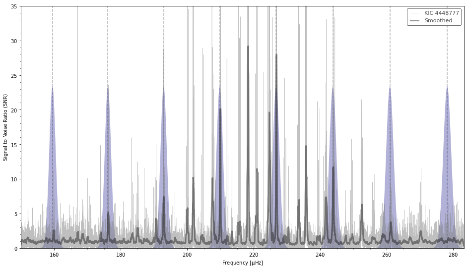
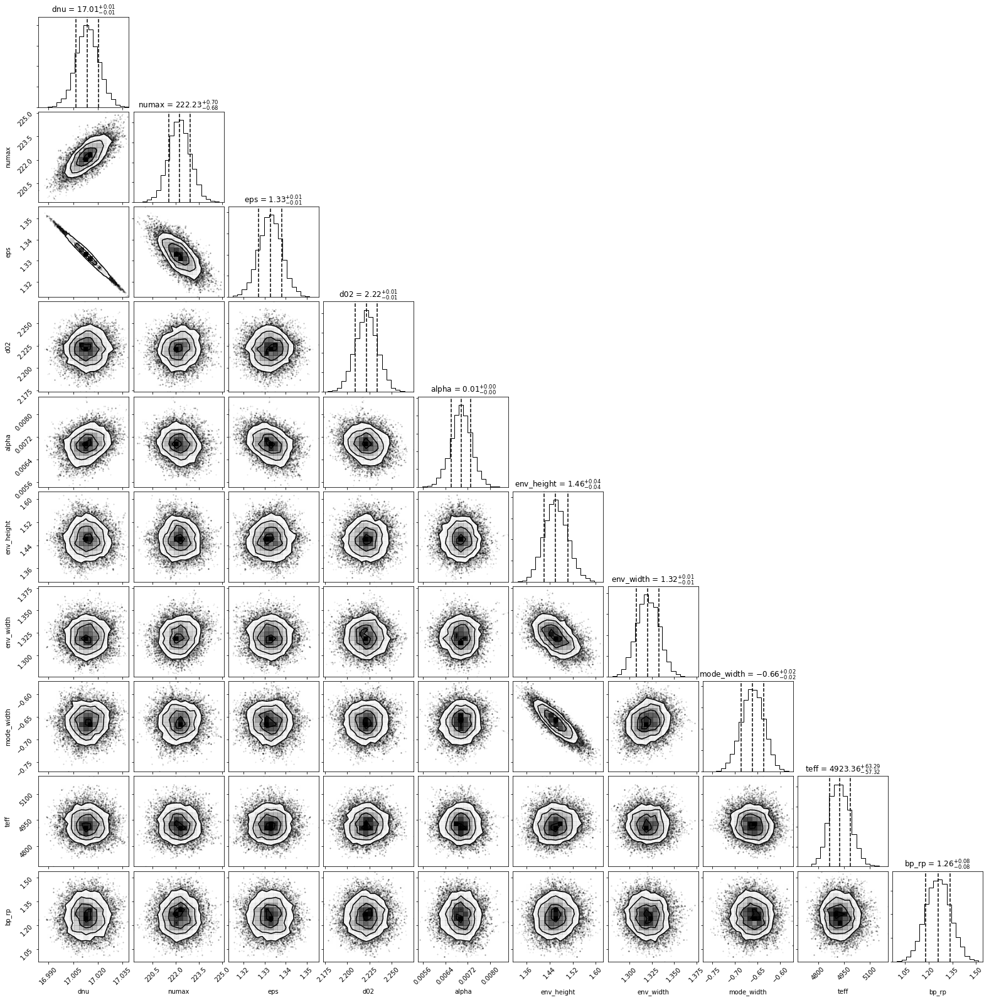
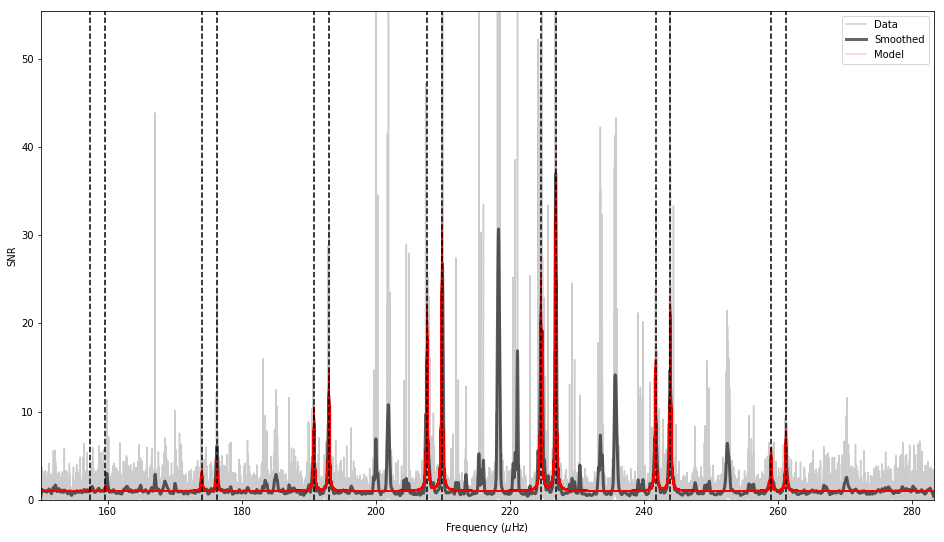
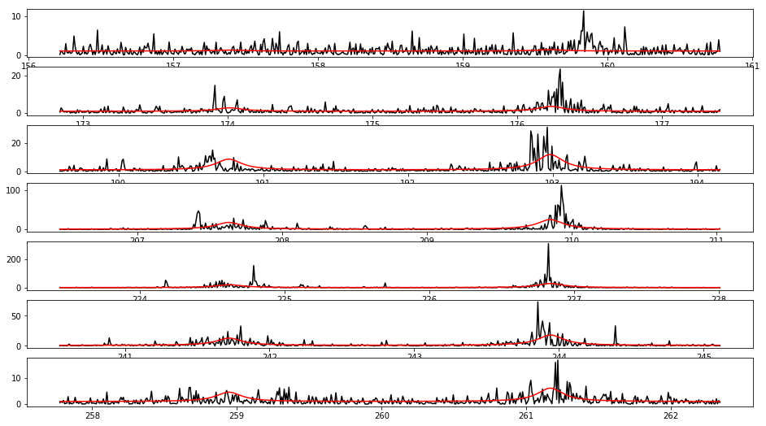

[1]:
import pbjam as pb
from pbjam.jar import session
import matplotlib.pyplot as plt
import numpy as np
import lightkurve as lk
import sys
import astropy.units as units
import pandas as pd
import lightkurve as lk
import importlib
[2]:
kic = '4448777'
numax = [220.0, 3.0]
dnu = [16.97, 0.05]
teff = [4750, 100]
bp_rp = [1.34, 0.1]
[3]:
lc = lk.search_lightcurvefile(kic, quarter=1).download().PDCSAP_FLUX.normalize().flatten(window_length=401)
for q in range(2,17):
lc = lc.append(lk.search_lightcurvefile(kic, quarter=q).download().PDCSAP_FLUX.normalize().flatten(window_length=401))
lc = lc.remove_outliers(4)
pg = lc.to_periodogram(normalization='psd', minimum_frequency=150.0).flatten()
[4]:
star = pb.star(kic, pg, numax, dnu, teff, bp_rp, store_chains=True, nthreads=4)
[5]:
star.run_epsilon()
[6]:
star.epsilon.plot(pg);

[7]:
star.run_asy_peakbag(norders=7)
[8]:
star.asy_fit.plot_corner();

[9]:
star.asy_fit.plot();

[10]:
star.peakbag = pb.peakbag(star.f, star.s, star.asy_result) # should be run peakbag ...
[11]:
star.peakbag.plot_start_model();

[12]:
star.run_peakbag()
---------------------------------------------------------------------------
AttributeError Traceback (most recent call last)
<ipython-input-12-3f610cedd04d> in <module>
----> 1 star.run_peakbag()
~/work/repos/PBjam/pbjam/star.py in run_peakbag(self, model_type, tune)
106 self.peakbag = peakbag(self.f, self.s, self.asy_result)
107 self.peakbag.sample(model_type=model_type, tune=tune,
--> 108 cores=self.nthreads)
109 pm.summary(self.peakbag.samples).to_csv(self.bpath + os.sep + f'peakbag_summary_{self.ID}.csv')
110 if self.store_chains:
~/work/repos/PBjam/pbjam/peakbag.py in sample(self, model_type, tune, target_accept, cores, maxiter)
345 with self.pm_model:
346 self.samples = pm.sample(tune=tune * niter,
--> 347 start=self.start + np.randon.randn(len(self.start)) * 1e-3,
348 cores=cores,
349 init='adapt_diag',
AttributeError: module 'numpy' has no attribute 'randon'
[ ]:
star.peakbag.plot_fit(thin=10);